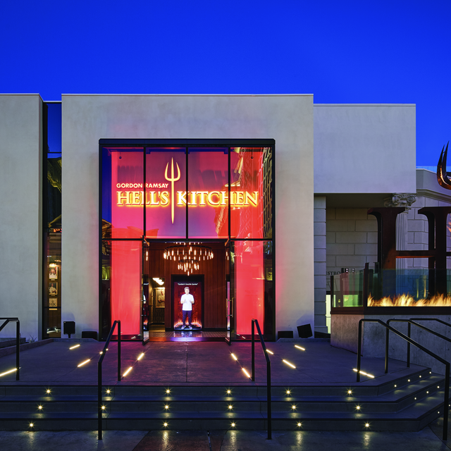
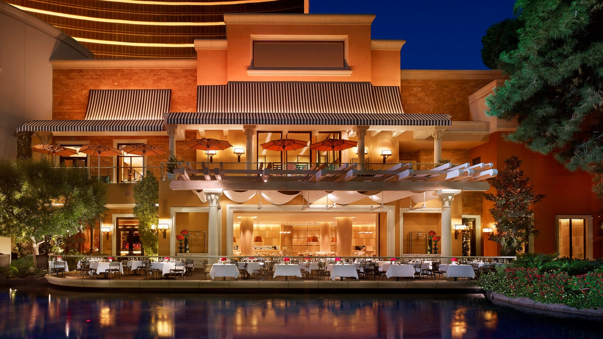
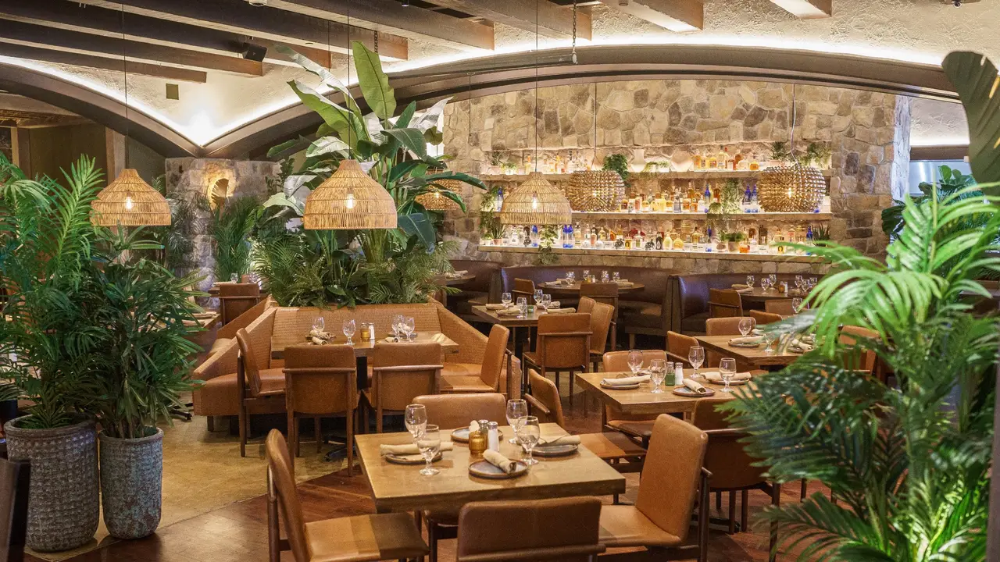

Las Vegas 2040 — Places To Eat
American — Hell’s Kitchen (Caesars Palace)
Modern American plates known for their famous Beef Wellington. Big energy, open kitchen, and a prime location when looking for a dinner spot as it is close to everything. Great pick before a show.
Steakhouse — SW Steakhouse (Wynn)
Classic Vegas steak experience overlooking the Lake of Dreams. This is one of the mostpopular steakhouses in all of Las Vegas. Known for prime cuts, tableside service, and a polished dining room, SW Steakhouse is a place you will never forget.
Laid-Back Tex-Mex — El Segundo Sol
Tacos, enchiladas, and margaritas right on the Strip side. Easy choice for small or large groups and casual lunches or late-night bites. One of the best Tex-mex locations in all of Vegas. You will not be dissapointed.
2040 Las Vegas • vegas2040@gmail.com • (702) 204-2040